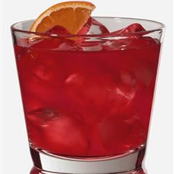

Negroni Cocktail

Description
This will knock your socks off - I believe this drink is Italian and is generally sipped, while eating marinated olives. Be sure to use good quality gin!
Ingredients
- ¾ fluid ounce campari
- ¾ fluid ounce gin
- ¾ fluid ounce sweet vermouth
- 2 fluid ounces carbonated water
- 1 wedge lemon, for garnish
Steps
- In a rocks glass over ice, combine campari, gin, sweet vermouth.
- Fill with carbonated water and garnish with a wedge of lemon